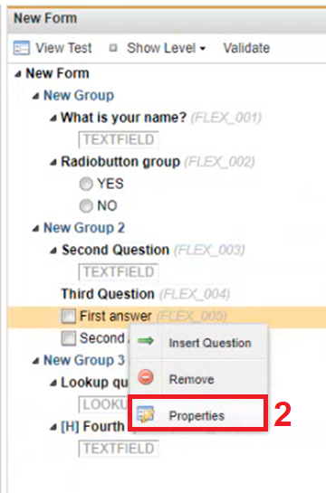
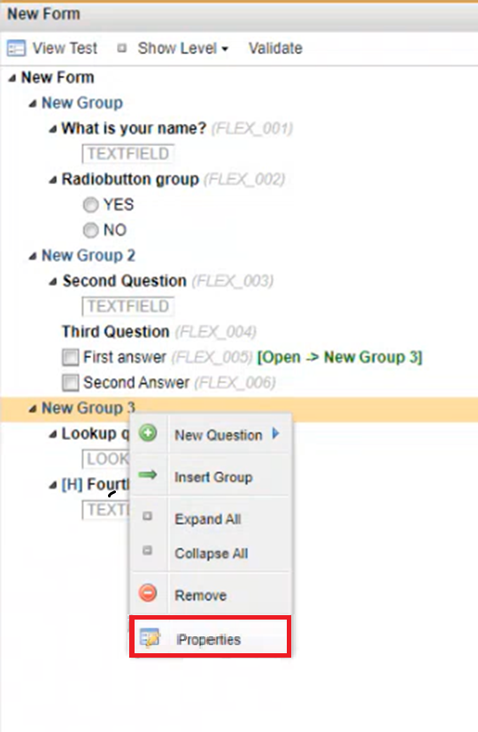
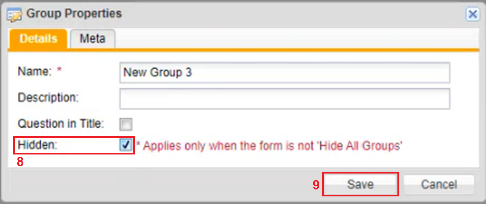

Linking Answers to Open Another Group of Questions
To Link an Answer to Open Another Group of Questions
In the form, right click an answer. A menu appears.

Click Properties.
Click the Actions tab.
Click the checkbox in front of a Group that you want to link to the question.
Click Save. The Question Properties window closes.
To hide a group of questions so that they appear on the active form only when the answer linked to the group is selected, right click the linked Group of questions, a menu appears.
Click Properties.

The Group Properties window opens.

Click the Hidden checkbox.
Click Save. In View test when the form viewed, after the First Answer in Group 2 is selected then the questions in Group 3 will populate.